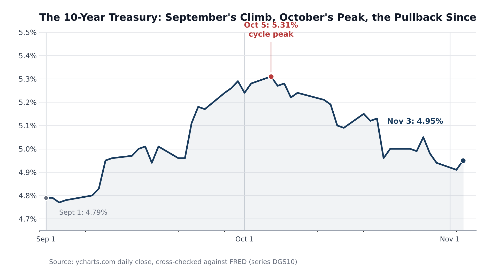
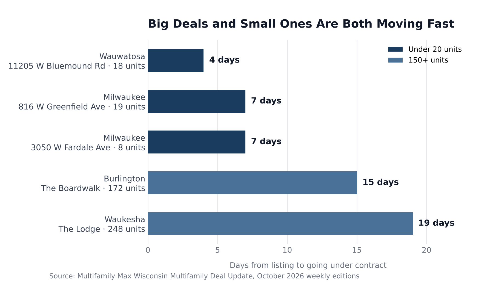

October added 25 confirmed closings worth more than $243.7 million statewide, from a $100.9 million, 458-unit trade in Mount Pleasant down to a $760,000 six-unit closing in Milwaukee. Zoom out and we've now tracked 319 multifamily sales worth more than $1.39 billion so far in 2026, per our weekly tracking. New listings stayed active too — 23 properties and 588 units, with pricing holding firm on most of them. Buyers haven't slowed down for a second. The right deals are still moving in days.
Wisconsin Multifamily Market Update (5+ Units)
October kept the pace from September going. Four weeks of steady closings, strong new listing activity, and buyers moving fast on anything priced right.
High-Level Market Stats (October 2026)
- 1,352 units traded
- $243,766,900 in confirmed transaction volume
- 23 new listings came to market
- 588 units of new listings
- 15 price reductions
- 9 properties went pending
- 12 listings removed from market
Closings That Stood Out
If you want to understand where your property sits today, email me here.
The 10-Year Spiked Again. Then It Reversed.
The 10-year Treasury climbed even higher in October, peaking at 5.31% on October 5th — above the 19-year high we flagged last month. Then it turned. By November 3rd, the 10-year had eased back to 4.95%, and it touched 4.87% intraday this week: a 44 basis point pullback from the peak in about a month.

Here's why that matters more than the percentage itself. When rates spike, the fear is always the same: higher debt costs mean lower property values, because buyers can't pay as much and still hit their return targets. That fear was real in late September and early October while the 10-year kept climbing.
Now that rates have given back more than a third of that spike, the fear is fading right along with it. We're not back to where we started in the spring, but we're back to something close to normal.
Wisconsin deal flow never actually stopped during the spike. October closed 25 deals worth $243.7 million, including a $100.9 million trade in Mount Pleasant and a $55.25 million trade in Sun Prairie. Institutional capital kept committing to this state the entire time rates were climbing.
The lesson from the last two months: don't make long-term decisions off short-term rate moves. If you were waiting on the sidelines for rate clarity before acting, you missed both the dip and the reminder that clarity doesn't come on your schedule.
If you're an owner wondering what today's rate environment means for your specific asset, email me here.
Year-End Moves for Investors
This market has been competitive all year. Two tax-driven forces are about to make the next eight weeks even more so.
Bonus depreciation rewards closing now, not in January.
The One Big Beautiful Bill Act restored 100% bonus depreciation, and a cost segregation study on top of it can mean hundreds of thousands of dollars in first-year deductions on a single acquisition. Those deductions only apply to the tax year a property is placed in service. A buyer who wants the write-off against this year's income has to close by December 31st. That's real pressure to act now instead of letting a deal slide into Q1 — especially for anyone who's had a strong 2026.
1031 sellers are racing their own clock, and that makes them motivated buyers.
Anyone who sold in the fourth quarter and is 1031-ing into a replacement property can be working with a real closing deadline as early as April 15th instead of the usual 180 days, depending on when they sold. Buyers racing a 1031 deadline are typically less price-sensitive and more time-sensitive. They need to close, not just find the best deal.
If you're selling into this market, a 1031 buyer with a ticking clock is often the one who moves fastest and pays the most to get it done.
Between buyers chasing this year's depreciation and 1031 buyers racing their own deadlines, expect more competition for well-priced product over the next eight weeks. Email me if you want to talk through how either of these affects a deal you're working on.
Big Deals and Small Ones Are Both Moving Fast
Five deals this month tell the same story at two very different scales.

- 11205 W Bluemound Rd, Wauwatosa: 18 units, under contract in 4 days
- 816 W Greenfield Ave, Milwaukee: 19 units, under contract in 7 days
- 3050 W Fardale Ave, Milwaukee: 8 units, under contract in 7 days
- The Boardwalk, Burlington: 172 units, listed at $29.95M, under contract in 15 days
- The Lodge, Waukesha: 248 units, listed at $55.4M, under contract in 19 days
Nationally, multifamily construction starts fell to about 55,000 units in the first quarter of 2026 — the lowest quarterly pace since 2011 and down 73% from the 2022 peak, per Apartments.com and CoStar. Less new supply coming online means well-priced existing product faces less competition. Buyers who've been waiting on the sidelines for rate clarity are starting to realize that clarity might not come, and the ones acting now are getting the best product, regardless of deal size.
If you want to talk through how fast your property would move at today's pricing, email me here.